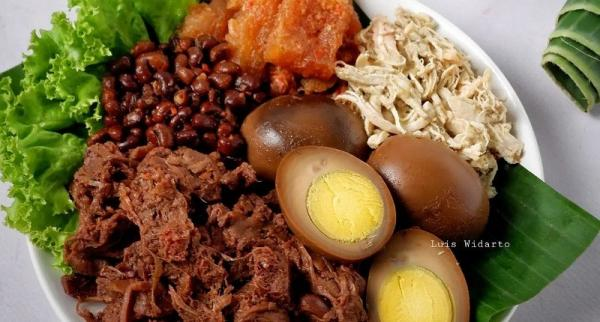

Sate Klatak
Sate kambing khas Bantul, Yogyakarta, yang menggunakan jeruji sepeda sebagai tusukan, bukan bambu. Tusuk besi ini membantu daging matang merata dan tidak menggunakan bumbu kecap seperti sate pada umumnya, melainkan hanya garam dan lada, yang menghasilkan rasa gurih dan empuk.

Bakpia
Kue panggang bulat pipih asal Yogyakarta, yang terbuat dari campuran tepung dan isian manis kacang hijau, cokelat, keju, atau rasa lainnya. Kue ini merupakan hasil akulturasi budaya Tionghoa dan Jawa, yang awalnya diadaptasi dari resep asli berisi daging babi menjadi camilan manis yang dapat dinikmati semua kalangan. Bakpia menjadi oleh-oleh khas Yogyakarta yang populer dan kini hadir dalam berbagai varian, seperti bakpia kering yang renyah dan bakpia basah yang lebih lembut.

Gudeg
Makanan khas Yogyakarta yang terbuat dari nangka muda yang dimasak berjam-jam dengan santan dan gula kelapa hingga empuk, memiliki cita rasa manis dan gurih, serta berwarna cokelat dari daun jati.